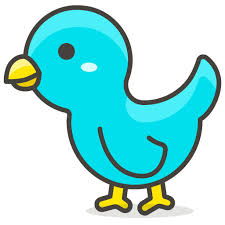
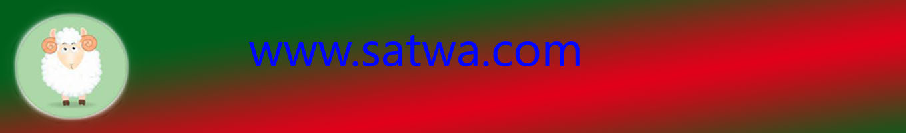
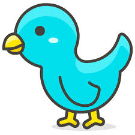

|  | |
|
 |
ReptilReptil (binatang melata) adalah sebuah kelompok hewan vertebrata yang berdarah dingin dan memiliki sisik yang menutupi tubuhnya. Reptilia adalah tetrapoda (hewan dengan empat tungkai) dan menelurkan telur yang embrionya diselubungi oleh membran amniotik. |
| © www.satwakami.com | 2018 | All Righs Reserved | |